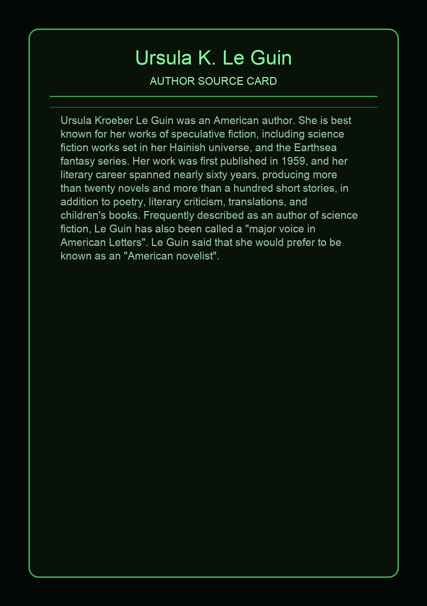

No local photo available for this source yet.
Ursula Kroeber Le Guin was an American author. She is best known for her works of speculative fiction, including science fiction works set in her Hainish universe, and the Earthsea fantasy series. Her work was first published in 1959, and her literary career spanned nearly sixty years, producing more than twenty novels and more than a hundred short stories, in addition to poetry, literary criticism, translations, and children's books. Frequently described as an author of science fiction, Le Guin has also been called a "major voice in American Letters". Le Guin said that she would prefer to be known as an "American novelist".
This page aggregates references to the source material behind Name Lore entries.